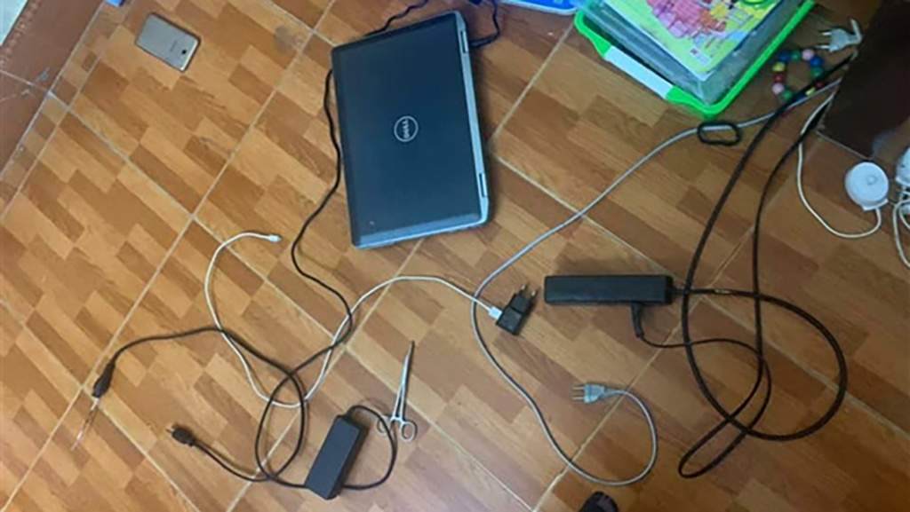

Sau vụ việc học sinh lớp 5 tại Hà Nội tử vong do điện giật tại nhà vừa qua, một loạt các trường học trên địa bàn Hà Nội đã thông báo khẩn với phụ huynh đảm bảo an toàn học trực tuyến cho con.
Hiện trường vụ việc dẫn tới việc bé trai 10 tuổi thiệt mạng khi học trực tuyến
Chị Phan Thảo, phụ huynh có con học lớp 1, Trường Tiểu học Đặng Trần Côn (Q.Thanh Xuân), cho biết phụ huynh và học sinh đã nhận được hướng dẫn những nội dung an toàn về điện và cảnh báo nguy cơ cho các con được thiết kế bằng các hỉnh ảnh minh hoạ rất dễ hiểu với trẻ nhỏ. Nhiều phụ huynh đã in ra và dán tại vị trí học tập để các con dễ quan sát và ghi nhớ.
Buổi học ngày 13.9, giáo viên chủ nhiệm cũng dành thời gian để trao đổi rất kỹ với cha mẹ học sinh, đề nghị phụ huynh quan tâm, theo dõi việc học của con trước, trong và sau giờ học. Khi học trực tuyến, bố mẹ chú ý rà soát các trang thiết bị phục vụ học tập của các con để đảm bảo an toàn.
“Những nhắc nhở này thật ra rất cần thiết vì học trực tuyến, các con sẽ ít phải tiếp xúc với các thiết bị điện, chỉ lơ là bất cẩn cũng có thể xảy ra những tai nạn đáng tiếc”, chị Thảo nói.
lưu ý an toàn khi sử dụng điện
Trường tiểu Ngọc Hà (Q.Ba Đình) cũng cho biết đã đặc biệt nhấn mạnh yêu cầu tới các thầy cô giáo về nhiệm vụ lồng ghép giáo dục học sinh kỹ năng học trực tuyến sao cho đảm bảo an toàn. Giáo viên dạy cho học sinh kỹ năng phòng tránh dịch bệnh và tai nạn thương tích để các em hiểu và biết cách xử lý, tự bảo vệ bản thân và biết thận trọng khi chơi những đồ vật, những nơi nguy hiểm.
Trường Tiểu học Kim Liên (Q.Đống Đa) yêu cầu phụ huynh thường xuyên quan tâm, rà soát, kiểm tra cơ sở vật chất, đặc biệt là các phương tiện điện tử phục vụ cho việc học tập của con; đồng thời gia đình cố gắng bố trí thời gian theo dõi việc học tập của con trước, trong và sau giờ học trực tuyến; theo dõi sức khoẻ của con khi con ở nhà không có người lớn bên cạnh.
Hướng dẫn con không dùng máy tính, ipad, điện thoại vừa sạc vừa học sẽ không an toàn (laptop cắm thường xuyên vẫn nên kiểm tra dây không hở và ổ điện không lỏng, Ipad, điện thoại không bị chai pin quá nóng); không cho các con ngồi học bằng thiết bị điện tử dưới nền nhà; không để sách vở, đồ dễ cháy cạnh ổ điện.
Một số trường tiểu học ở Q.Hai Bà Trưng cũng đưa ra khuyến cáo phụ huynh kiểm tra lại các thiết bị điện trong nhà, đảm bảo các dây điện không hở và tránh xa khí hoặc bất kì nguồn nhiệt nào khác; dạy trẻ nhận biết những vật dụng, chất liệu có thể dẫn điện gây giật điện nguy hiểm đến tính mạng.
Nhiều trường bày tỏ mong muốn cha mẹ nên đầu tư cho con sử dụng những thiết bị điện thông minh, chuyên dụng có khả năng tự ngắt, hay dùng những thiết bị có nắp che phần ổ cắm cũng như để những món đồ nguy hiểm tránh xa tầm tay trẻ em. Ngoài ra, với các thiết bị điện trong nhà, cha mẹ nên sử dụng những biểu tượng cảnh báo để tạo thói quen cho trẻ nhỏ.